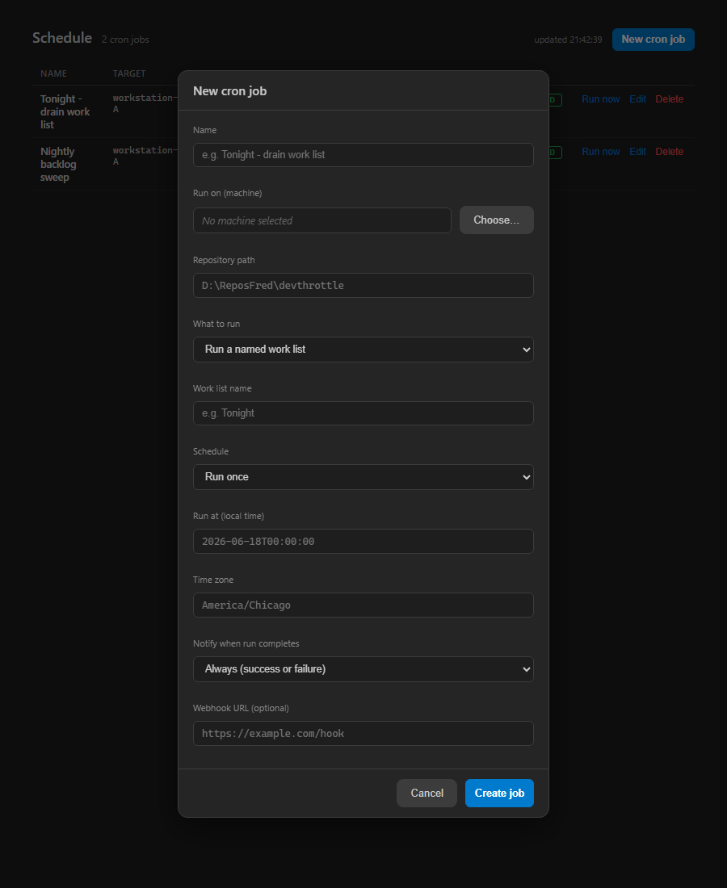

Per-job, opt-in run-complete notifications for Gateway cron jobs. When a fire finishes
(success OR start-failure), and the job opts in via its notifyOn policy, the Gateway delivers a
notification carrying the job name, the outcome (infra-status vs task-status per #483), the target machine,
the resulting session id, and a deep link to that session.
DirectorEventLog, #330) observed at GET /directors/{id}/events, the same path
needs-you / session-created / session-exited already use. No new channel was invented (Assumption 1).notifyWebhookUrl is set, the same
payload is also POSTed there for external consumers.notifyOn defaults to none, so existing/silent jobs
never start notifying (Assumption 2). A single notification per run (Assumption 3).cc-cron CLI (building on #621).| Area | File(s) | Change |
|---|---|---|
| gateway_contracts | CronJobDto.cs | Added NotifyOn (none/always/failure, default none) and NotifyWebhookUrl; added the CronNotify policy helper and the CronRunCompletedPayload DTO. |
| gateway_contracts | DoorbellRequest.cs | Added the cron-run-completed event name to the existing doorbell event vocabulary. |
| gateway | Running/ICronNotifier.cs, Running/GatewayCronNotifier.cs | New notifier: records onto the existing per-Director event ring AND POSTs the optional webhook; builds the session deep link the same way the /sessions aggregation does. |
| gateway | Running/CronEngine.cs | On fire finish, gates on NotifyOn vs the outcome and delivers the notification (best-effort, never affects the fire). |
| gateway | CronJobStore.cs | Persists + normalizes the notify fields through create/update/copy. |
| gateway | GatewayHost.cs | Wires the production notifier (event ring + registry endpoint resolver + webhook HttpClient). |
| cockpit | Components/Pages/Schedule.razor(.css) | Notify dropdown + conditional webhook field in the create/edit modal; preserved through edit/toggle; a table badge. |
| cc-cron CLI | tools/cc-cron/src/cli.py | --notify-on / --notify-webhook on create (validated), surfaced in get. |
Every criterion was proven over real HTTP against the production CronEngine +
GatewayCronNotifier + DirectorEventLog + CronJobStore, plus a real webhook
listener (the only test seam is a session starter that fails a fire when the job name carries the marker
[FAILSTART] - the engine, notifier, store, event ring and webhook are all production code).
| AC | Expected | Actual | Result |
|---|---|---|---|
| AC1 | A notify-enabled job sends a notification on finish carrying job name, outcome, target machine, session id, and a working link to the session. | Success fire produced a cron-run-completed event on the fleet ring (sid sess-0001, state started) and a webhook payload with jobName, succeeded=true, infra=started, machine=workstation-A, sid=sess-0001, and a working sessionLink. See transcript.txt / captured_webhooks.jsonl. | PASS |
| AC2 | A job whose fire FAILS also notifies, with the failure / not-started reason. | [FAILSTART] fire (notifyOn=always): run recorded infra=not-started; a cron-run-completed event filed under the job id; webhook payload carried succeeded=false, infra=not-started, reason="launcher could not start a Director on the target machine". | PASS |
| AC3 | notifyOn honors always vs failure: success under failure sends nothing; failure notifies. | SUCCESS under notifyOn=failure -> webhooks unchanged (SILENT). FAILED under notifyOn=failure -> +1 webhook (NOTIFIED). See transcript AC3 block. | PASS |
| AC4 | The setting round-trips through POST/GET /cron/jobs and is editable in the Schedule UI + cc-cron. | POST then GET echo notifyOn=always notifyWebhookUrl=...; a no-notify job comes back notifyOn=none. Schedule UI modal screenshot shows the dropdown set to Always + the webhook field; cc-cron create --notify-on/--notify-webhook and get render it (cli-transcript.txt). bUnit tests assert the POST body carries the fields. | PASS |
| AC5 | Notifications reuse the existing fleet delivery (not a new channel); an optional per-job webhook also receives a POST with the same payload. | The notification is recorded via the existing DirectorEventLog at GET /directors/{id}/events (no new channel). The webhook listener captured the identical payload. See GatewayCronNotifier.cs + captured_webhooks.jsonl. | PASS |
| AC6 | Build clean; cron tests pass. | dotnet build cc-director.sln -> Build succeeded, 0 Warning(s), 0 Error(s). Gateway suite: 876 passed / 1 skipped. cc-cron: 19 passed. Cockpit Schedule: 9 passed. | PASS |

docs/cencon/architecture_manifest.yaml (new CronEngine + CronRunNotifier component on the
gateway container) and noted under DT-07 in docs/cencon/security_profile.yaml: egress only,
validated to http(s), typed HttpClient (no shell/string concatenation), best-effort and isolated from the fire,
owner-configured per job on the same single-owner tailnet trust boundary. The in-fleet notification reuses the
existing doorbell event ring - no new inbound surface. The one allowed contract change (the notify settings on
CronJobDto + the run payload) is exactly what the issue scoped IN.
I believe this is finished. All six acceptance criteria are met and proven against production code over real HTTP, the full solution builds clean with zero warnings, and the cron / cc-cron / Schedule test suites pass (including new tests for notify-on-success, notify-on-failure, always-vs-failure gating, default-OFF, the webhook POST, and the REST round-trip).